Simplifying orders for Holcim’s customers (previous version)
Project carried out in Hanzo for Holcim
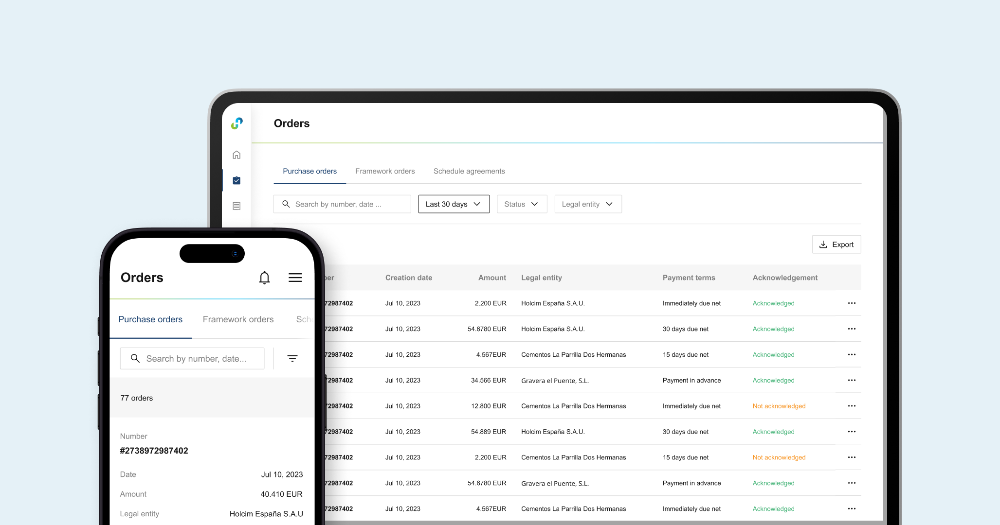
TL;DR
- Holcim, a global leader in building materials, was facing low customer portal adoption due to a confusing ordering process.
- I uncovered user pain points and business goals through stakeholder interviews and customer support insights.
- I used Object-Oriented UX to break down complexity and understand the system.
- I started by creating user flows and low-fidelity designs to explore ideas and discuss them with the team.
- Once the concepts were finalized, I developed high-fidelity prototypes.
- While data is pending, initial feedback indicates customer satisfaction.
Context
About Holcim
Holcim is a global leader in supplying cement, aggregates, and building materials, with a presence in 70 countries and a team of over 63,000 people. They’re focused on creating innovative and sustainable solutions that shape better cities and communities, while reducing environmental impact.
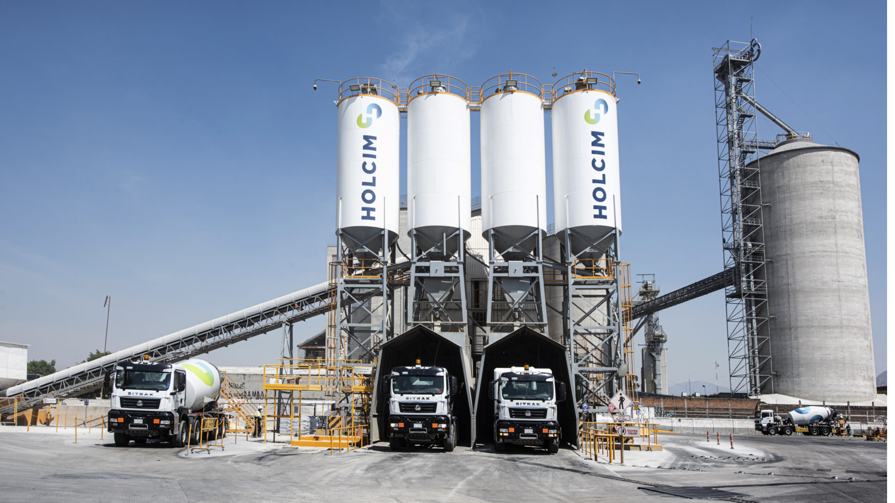
The problem
Customers were struggling to order materials and track orders in Holcim’s customer portal due to unnecessary complexity and confusing UI. This was leading to errors, additional manual work, and reluctance to transition from email and phone to the portal for managing orders.
Discovery
Uncovering customers pain points and business goals
First, I needed to understand the business objectives of the project and identify the customer's pain points. To do this, I conducted stakeholder interviews and tried to interview customers, but this wasn't possible. Instead, I interviewed the customer support team, using them as a proxy to gain deeper insight into user needs.
This is what i learned:
😣 Main user pains:
- The current ordering process was complex, time-consuming and prone to errors.
- Matching orders, deliveries, and invoices was complicated by the lack of links between them.
- Customers struggled to find specific orders because the filters didn't match their needs.
- Reordering previous purchases was challenging, and the feature likely went unnoticed by many.
- Bulk ordering was inefficient and error-prone.
- Customers didn't get notified when their orders were changed.
💼 Business goal
- Increase portal adoption by customers, who refuse to use it due to the user pains above and place orders by phone instead.
Understanding the system
The system I was designing for was very complex and involved many different features (orders, deliveries, invoices...), so I used OOUX (object-oriented UX) to break it down and simplify things. This allowed me to map out everything the design needed to take into account and also raised good questions, which I answered with the help of the Holcim team.
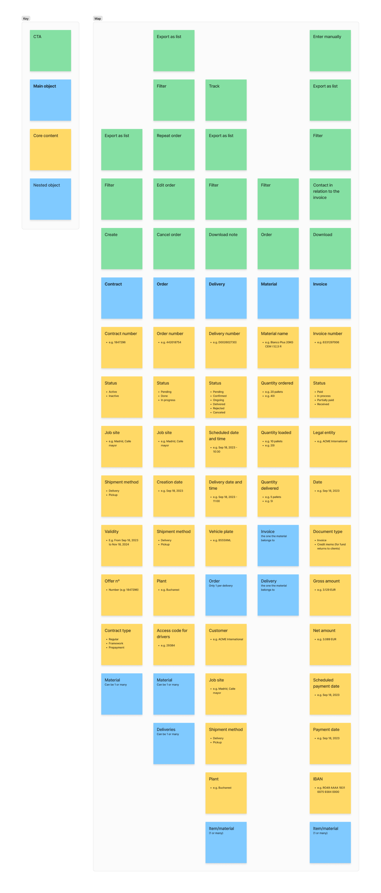
Analyzing the current UI
I also analyzed the current UI to determine what works well, what needs to be improved and uncover gaps or areas where new functionality could provide added value.
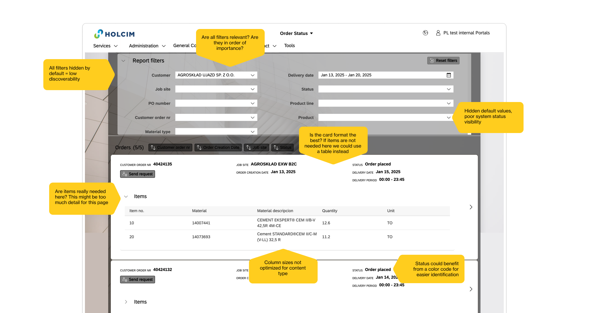
Ideation
User flows
I decided to create user flows and review them with Holcim’s team to ensure we weren’t having gaps and to align on system requirements. This collaboration helped identify potential friction points early and ensured the flows would be feasible from a technical perspective, leading to a smoother implementation process.
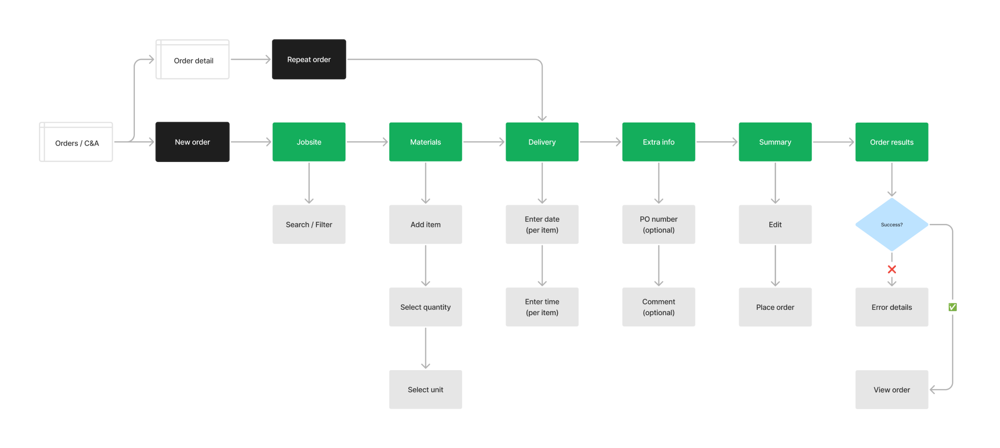
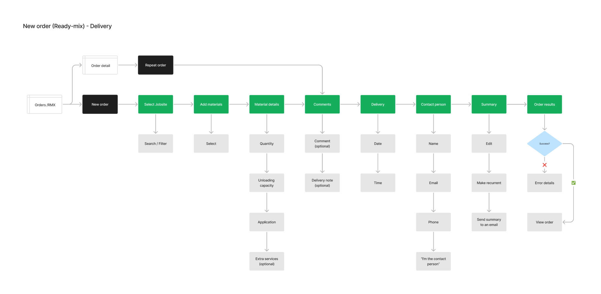
Low-fi exploration
As I always do, I explored different paths at very low fidelity before committing to one. This helped me to discard the ideas that didn't feel quite right and to have an overview of all the different paths I could take. I discussed the pros and cons of the different paths with the team and we agreed on the one that seemed likely to work best.
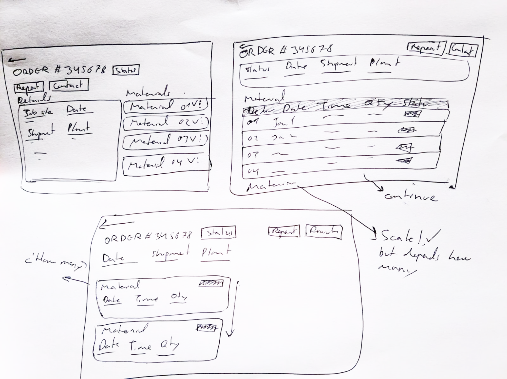
Final design
Key pages
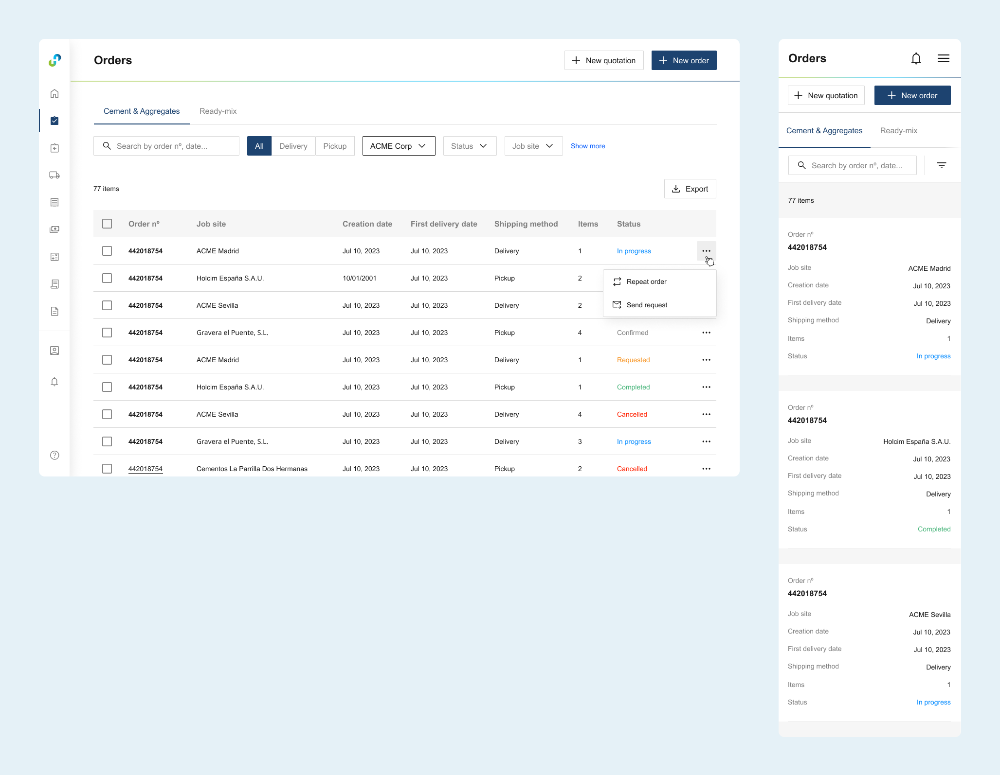
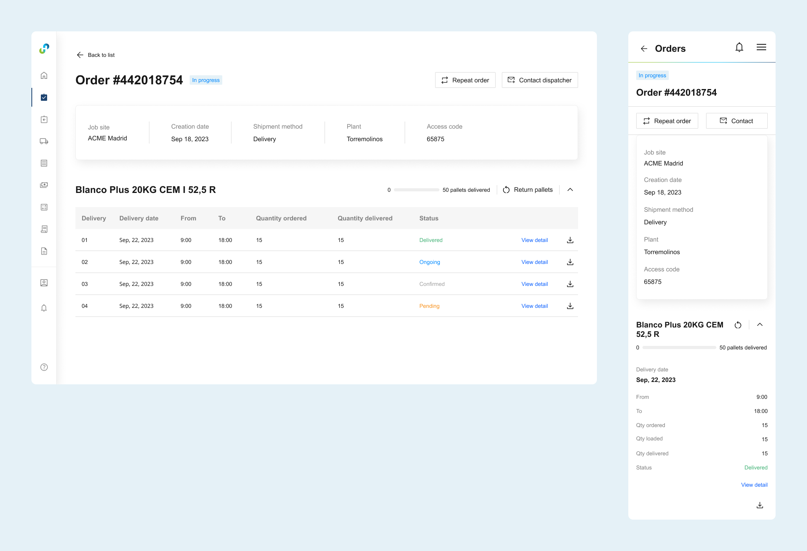
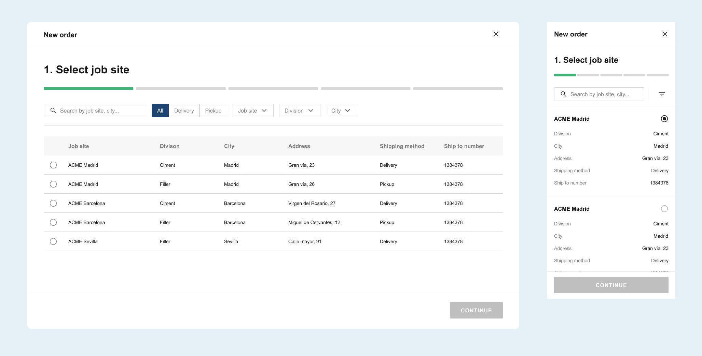
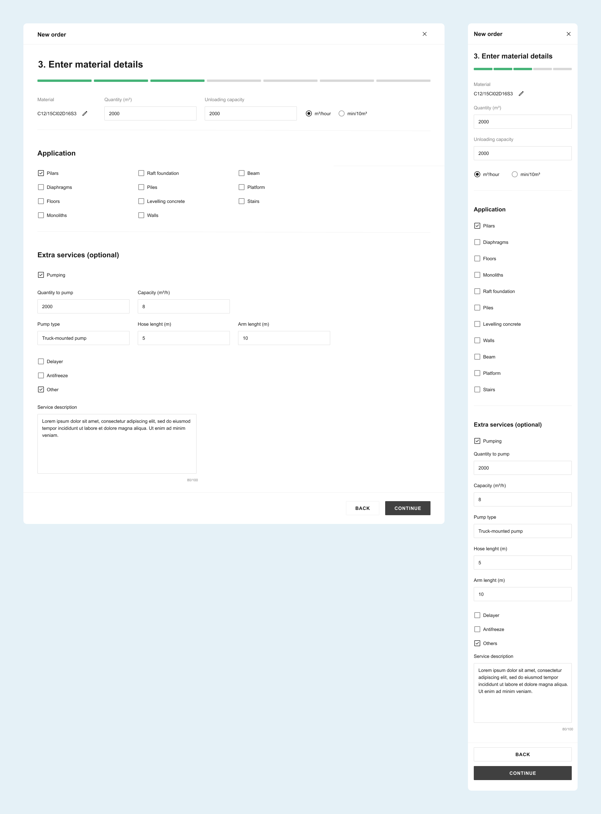
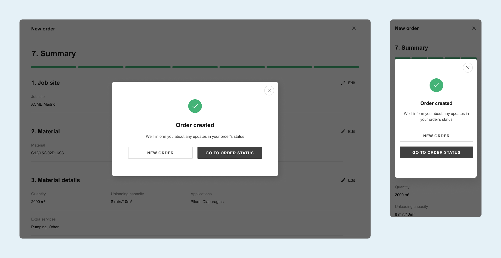
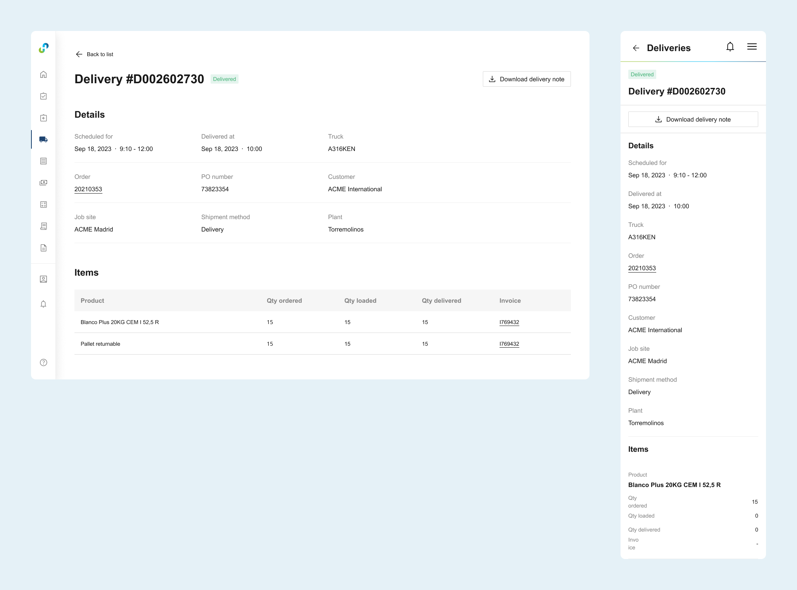
Thanks for reading!